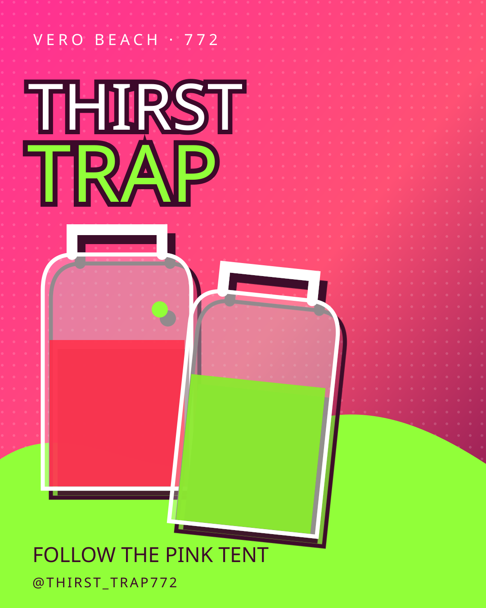
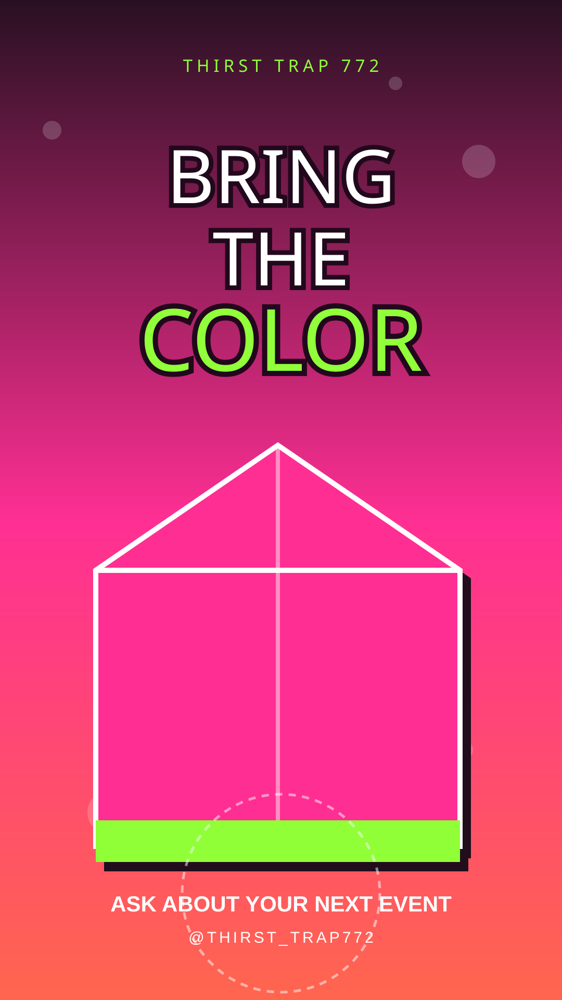

LEMONADE
ENERGY
Bright, cold, recognizable—and flexible enough for the real lineup to change without rebuilding the whole site.
MENU DETAILSOWNER-CONFIRMED
VERO BEACHPOP-UP ENERGY
Crave. Drink. Repeat.
The bright-pink tent people remember—now with one shareable front door for the cold-drink energy, the next pop-up, and the next event invitation.
01 · WHAT THE PAGE CAN SHOW
Thirst Trap's public Facebook presence points to lemonade, frozen drinks, tropical fruit, desserts, snacks, and event booking. The gift concept keeps the public promise at category level until the owner confirms a real menu.
Bright, cold, recognizable—and flexible enough for the real lineup to change without rebuilding the whole site.
MENU DETAILSCrushed ice, condensation, color, and a visual that can stop the scroll before a flavor name ever needs to be invented.
FLAVORS + PRICESFruit, desserts, snacks, and whatever the real table brings next—organized only after Thirst Trap approves it.
ASSORTMENTNo flavor, price, schedule, inventory, delivery, or availability is active on this concept. The next version becomes a true menu only after the business approves its details.
02 · MAKE THE NEXT INVITATION EASIER
The official Facebook page already invites people to book Thirst Trap for an event. This turns that line into a clear, phone-friendly path: choose the kind of opportunity, copy a respectful message, and send it through the social account the business already uses.
03 · FROM A CANOPY TO A FRONT DOOR
The website does not replace the market energy. It carries it forward. A flyer, table sign, text, or social post can all point to one place that explains the vibe, opens the verified socials, and helps an event organizer take the next step.
The color system makes the physical booth instantly recognizable online.
One permanent page can outlive a single flyer or pop-up.
Instagram and Facebook keep the real updates with the owner.
A clear inquiry path makes event interest easier to act on.
05 · THIS ONE IS A GIFT
“You built something people can spot across the street. We wanted to show what happens when that same energy gets a digital front door.”
— Fritz + Shay, FAMtastic Designs
No charge, no obligation, no account created, and nothing posted in the business's name.
Made with care by FAMtastic Designs ↗
04 · TWO READY-TO-REFINE GRAPHICS
MAKE THE
SCROLL THIRSTY.
These graphics are built with native, editable text—not baked-in AI lettering. Thirst Trap can approve the message, add the real date or menu, then export each size for its social channels.

FOLLOW THE PINK TENT
Download editable SVG ↧
BRING THE COLOR
Download editable SVG ↧